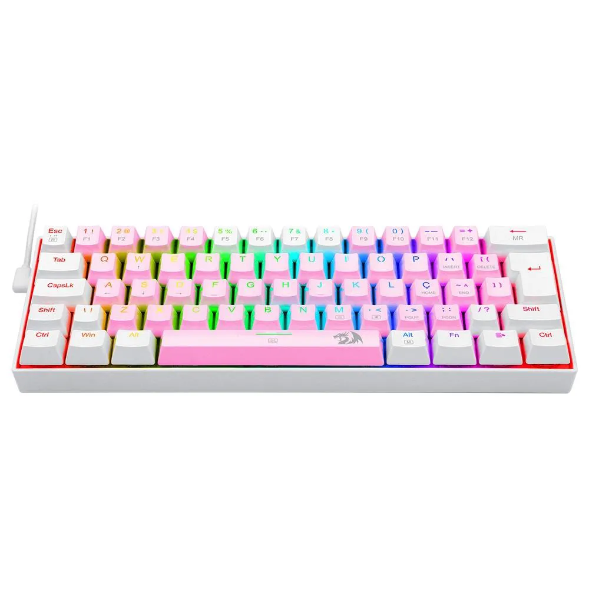
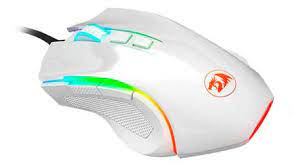
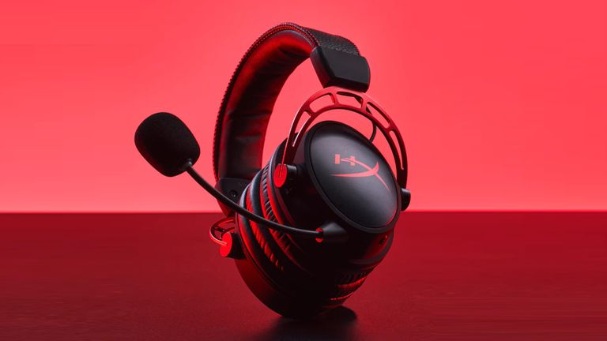

Perifericos Gamer
Perifericos:

Link do teclado mecânico
Características:
- Design Ergonômico
- Teclas para jogos de alto desempenho
- Keycaps super slim
Especificações:
Switches: Switches redragon low profiles
Acionamento: MECÂNICO
Hotswap DIY: SIM
Características:
- Preciso Sensor Pixart PAW3212 (7200 DPI / 10 G / 30 IPS)
- Polling Rate de 1000Hz (Tempo de Resposta Ajustável via Software de 1 / 2 / 4 / 8 ms)
- Iluminação RGB Redragon Chroma Mk.II para trazer mais brilho ao seu setup.
- Agora com a pintura exclusiva Lunar White para trazer ainda mais estilo para o seu setup.
- Botão para Troca de DPI "On-The-Fly" (4 Velocidades de DPI)
- 6 Botões programáveis para maior praticidade durante o uso.
- Compatível com Software para Ajuste Iluminação RGB e Configurações de Performance.
- Altamente indicado para Jogos Estilo MOBA.
- Pegada Ultra Confortável para usuários estilo Claw e Palm.
Especificações:
Sensor: Pixart PAW3212
DPI: 800 / 1200 / 1600 / 2400 / 7200 DPI
Polling Rate: Até 1000Hz
Botões Programáveis: 6
Shape: Ergonômico
Cor: Branco Lunar White
Design: Tradicional
Iluminação: RGB Redragon Chroma Mk.II
Software: Sim
Materiais: Plástico ABS
Conectividade: USB 2.0
Comprimento do cabo: 1.8m
Tipo de cabo: Revestido com Nylon trançado.
COR: Branco
Formato: TKL
Design: LOW PROFILE
Layout: ABNT2
Conectividade: WIRED
Software: SIM
Altura Ajustável: SIM
Materiais do case: ABS
Iluminação: RGB
Rollover: N - keys
Comprimento do cabo: 1.5m
Keycaps: DOUBLESHOT

Características:
- Preciso Sensor Pixart PAW3212 (7200 DPI / 10 G / 30 IPS)
- Polling Rate de 1000Hz (Tempo de Resposta Ajustável via Software de 1 / 2 / 4 / 8 ms)
- Iluminação RGB Redragon Chroma Mk.II para trazer mais brilho ao seu setup.
- Agora com a pintura exclusiva Lunar White para trazer ainda mais estilo para o seu setup.
- Botão para Troca de DPI "On-The-Fly" (4 Velocidades de DPI)
- 6 Botões programáveis para maior praticidade durante o uso.
- Compatível com Software para Ajuste Iluminação RGB e Configurações de Performance.
- Altamente indicado para Jogos Estilo MOBA.
- Pegada Ultra Confortável para usuários estilo Claw e Palm.
Especificações:
Sensor: Pixart PAW3212
DPI: 800 / 1200 / 1600 / 2400 / 7200 DPI
Polling Rate: Até 1000Hz
Botões Programáveis: 6
Shape: Ergonômico
Cor: Branco Lunar White
Design: Tradicional
Iluminação: RGB Redragon Chroma Mk.II
Software: Sim
Materiais: Plástico ABS
Conectividade: USB 2.0
Comprimento do cabo: 1.8m
Tipo de cabo: Revestido com Nylon trançado.

- Características:
- Marca: HyperX
- Modelo: HX-HSCA-RD
- Especificações:
- Fone de ouvido:
- - Driver customizado e dinâmico, 50 mm com magnetos de neodímio
- - Tipo circumaural, fechado
- - Resposta de frequência 13Hz–27.000Hz
- - Impedância 65
- - Nível de pressão sonora 98dBSPL/mW a 1kHz T.H.D. < 1%
- - Tipo e comprimento do fio cabo removível do headset (1,3 m) + cabo de extensão para PC (2 m)
- - Conexão cabo removível para headset - plugue de 3,5 mm (4 polos) + cabo de extensão para PC - plugues estéreo e de microfone de 3,5 mm
- Microfone:
- - Elemento microfone condensador Electret
- - Padrão polar cancelamento de ruído
- - Resposta as frequência 50Hz-18.000Hz
- - Sensibilidade -43dBV (0dB=1V/Pa,1kHz)
- Informações adicionais:
- - Drivers Dual Chamber de 50 mm customizados reduzem a distorção: A separação das frequências dos graves dos médios e agudos oferece um áudio mais preciso e estável.
- - Conforto avançado para muitas horas de jogo: Design dos fones de ouvido com espuma memory foam vermelha de qualidade premium exclusiva complementado por um arco da cabeça mais largo e material sintético mais macio e mais maleável.
- - Estrutura em alumínio durável: Estrutura em alumínio para maior durabilidade e estabilidade.
- - Prático controle de áudio no fio: Controles de áudio convenientemente localizados do lado direito do cabo trançado removível para ajustar o volume e silenciar o microfone com facilidade.
- Conteúdo da embalagem:
- - 01 Headset Gamer HyperX Cloud Alpha
[Tipos de perifericos]
- Teclado redragon
- Mouse redragon
- Fone Cloud Alpha
- Teclado redragon
- Mouse redragon
- Fone Cloud Alpha